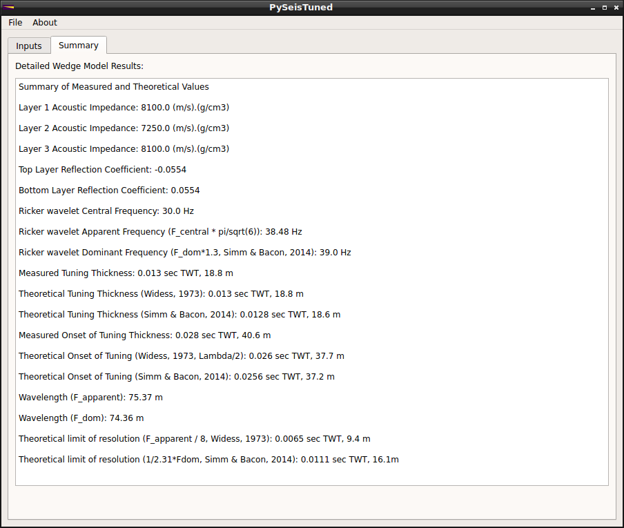

PySeisTuned2.0 is a simple tool for calculating seismic tuning wedges. Input the velocity and density properties of the wedge layers, specify the wavelet parameters, and a synthetic tuning wedge and tuning curve are generated.
The initial release, PySeisTuned1.0, was inspired by Agile Scientific's "X Lines of Code" Jupyter Notebook series and was written as a standalone GUI using Python 3 and PyQT5. In this iteration, a user needs to create a virtual conda environment using the provided environment.yml file and then launch the app from a command line prompt. While this works, it probably isn't the most user-friendly deployment. PySeisTuned1.0 is open source and licensed under GPL-3.0 for compatibility with PyQT5 licensing. The source code is available at my GitHub repository here.
Enter PySeisTuned2.0, which is now a web app! The PyQT5 GUI is gone and now PySeisTuned2.0 runs using Python 3, Flask, HTML5, & Bootstrap. PySeisTuned2.0 is open source and licensed under the Apache-2.0 license. The source code is available at my GitHub repository here.
My primary goal in re-writing PySeisTuned2.0 as a web app is to make the tool as easy as possible to use. Web apps have changed the way we interact with software and simplifies end-user consumption. Flask is a powerful and easy to use Python-based web app framework that connects the Python-based code in the background with the HTML5 user-interface. Styling is made simple by utilizing Bootstrap pre-built CSS style sheets.
Contributions, suggestions, and bug reports are all welcome! I hope you enjoy using the tool and please let me know if there ways I can make it even better: